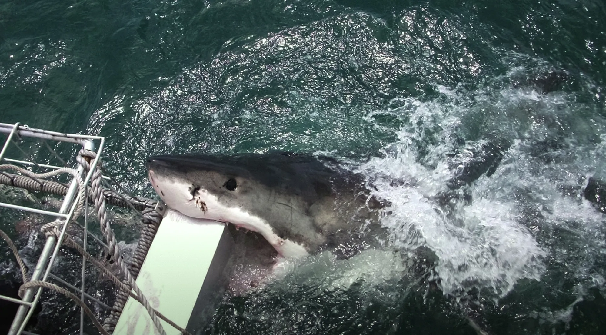
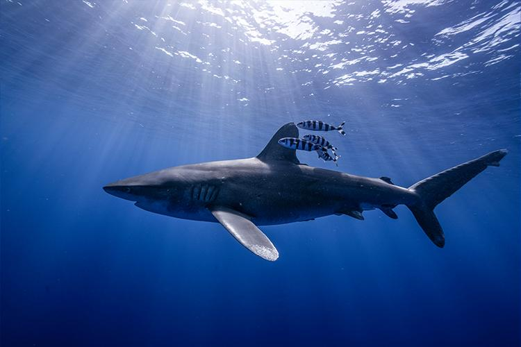
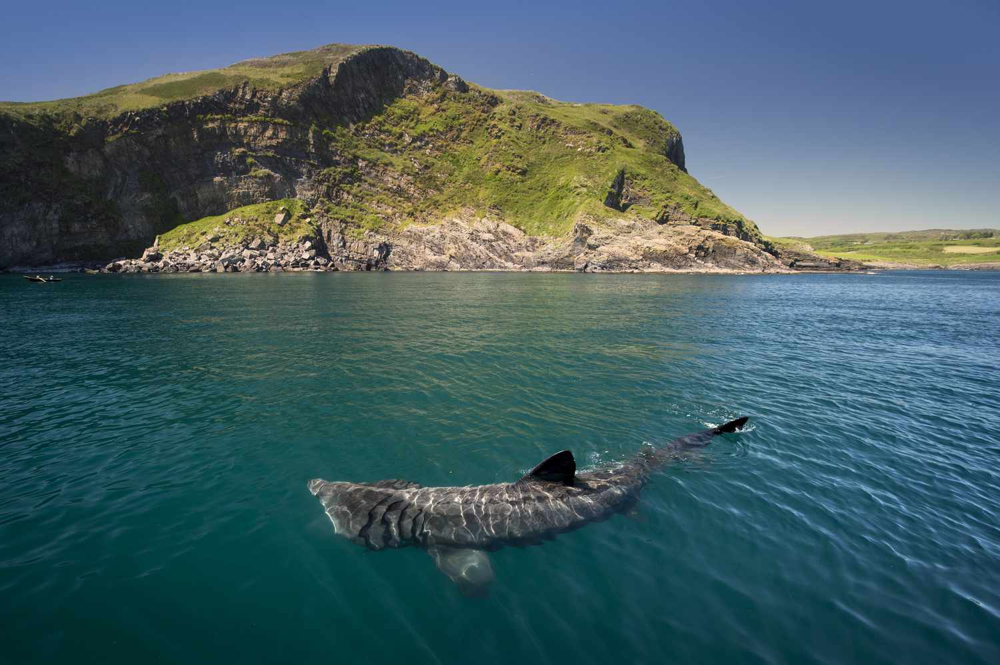

CSCE 242 is a 3 credit course relating to the CIS and CS majors at the University of South Carolina. It focuses on web technologies and how they can be used to design websites.
About sharks
In spite of the reputation people like to give sharks through movies like the Jaws series, sharks rarely hunt humans. In fact, you are more likely to die by coconut compared to a shark attack. However, according to the Florida Museum of Natural History, around 10 million sharks are hunted for every singular person killed by a shark. This site is dedicated to educating people about sharks, ranging from each type of shark to the various hunting styles of sharks.
More shark facts
Shark behaviors
Sharks have some somewhat interesting behaviors, for example, sharks tend to ignore humans competely outside of the odd boat bite, with most scuba divers reporting being ignored by sharks.
More shark behaviors
Poaching and Global Warming
Sharks are affected by poaching and global warming in various ways. For example, humans kill an estimated 100 million sharks a year, many for their fins, and over a third of shark and ray species are now threatened with extinction. Because sharks reproduce slowly, populations struggle to recover from the double pressure.
Global Warming
Types of sharks
Sharks and their various species tend to differ wildly, with species like the greenland shark being able to live up to 500 years old, while pygmy sharks tend to live to 7 years old.
More examples
